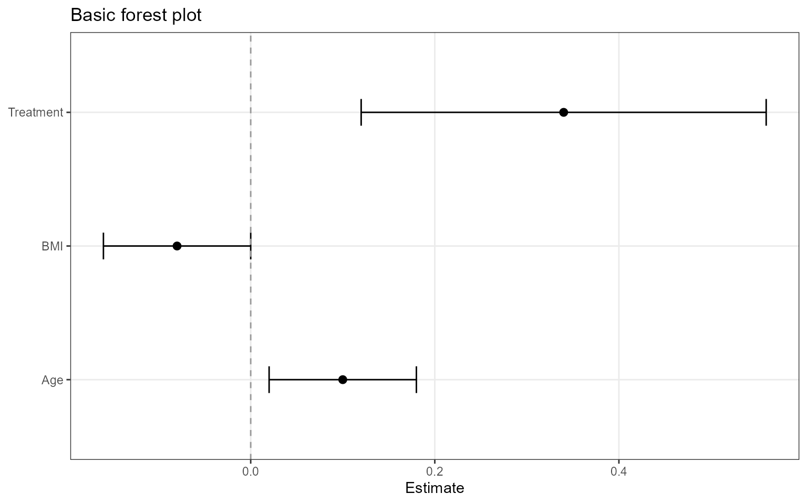
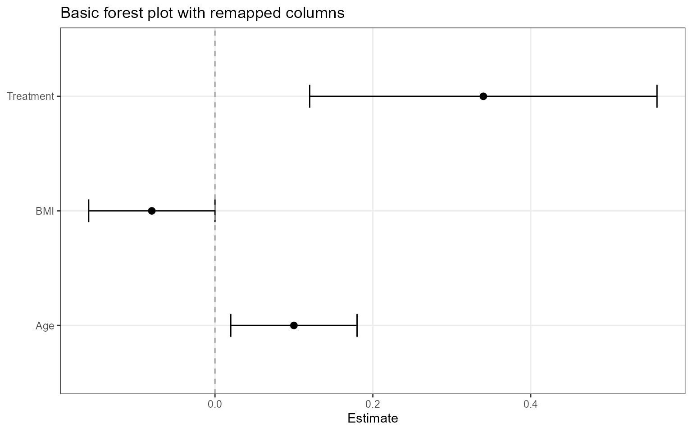
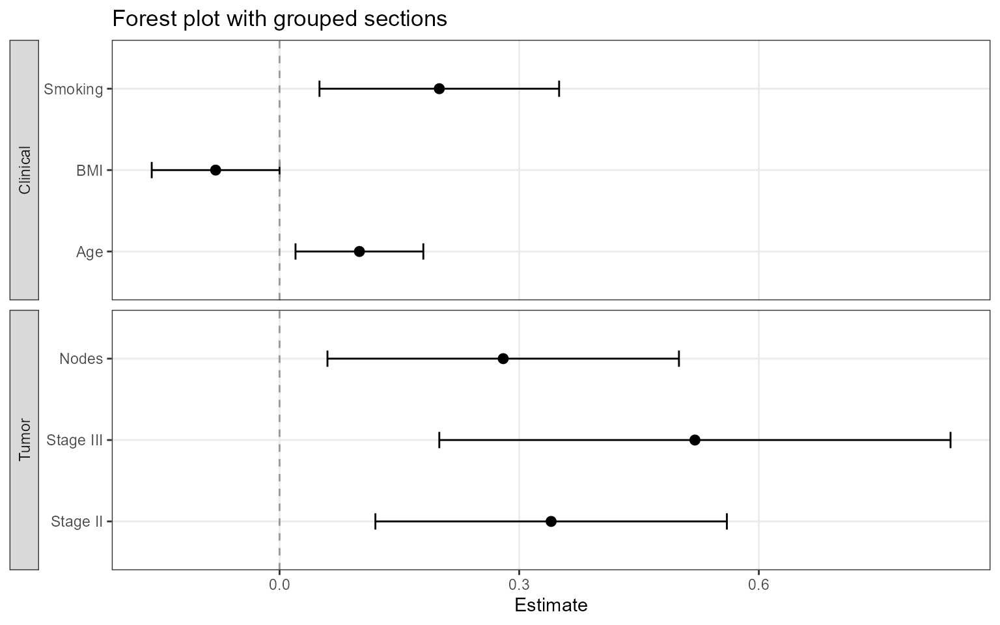
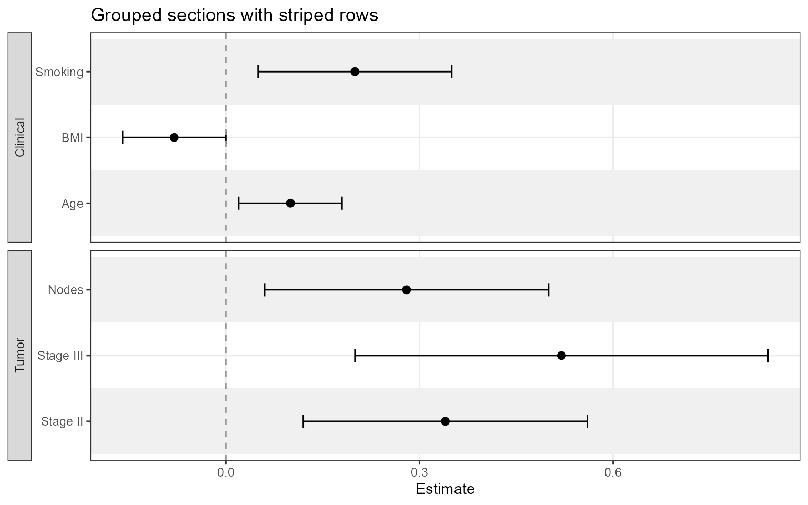
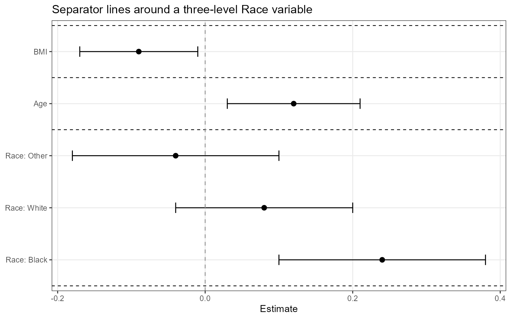
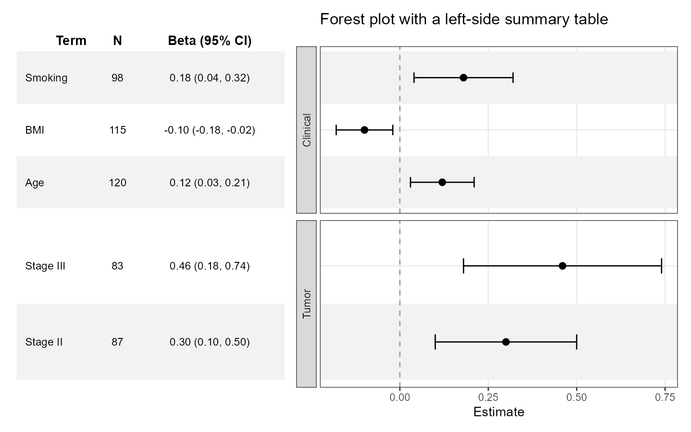
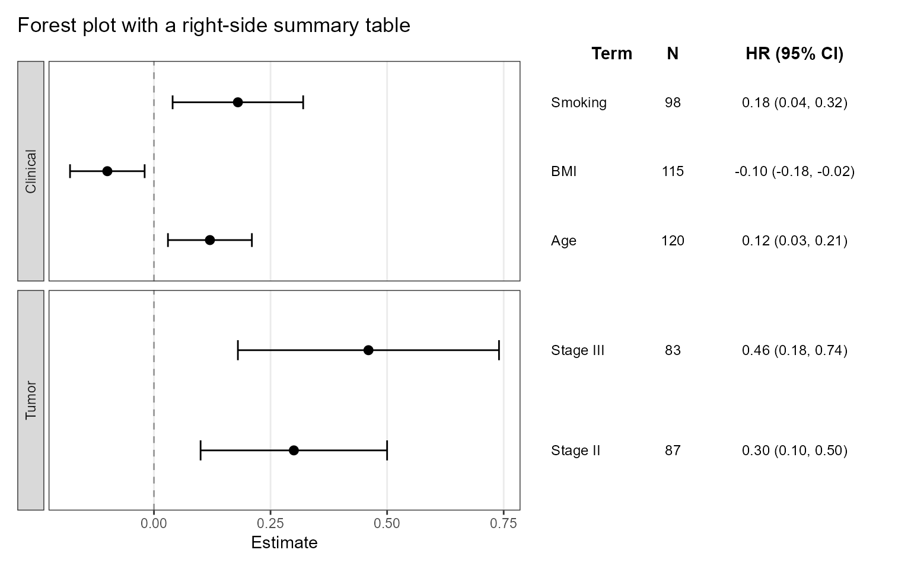
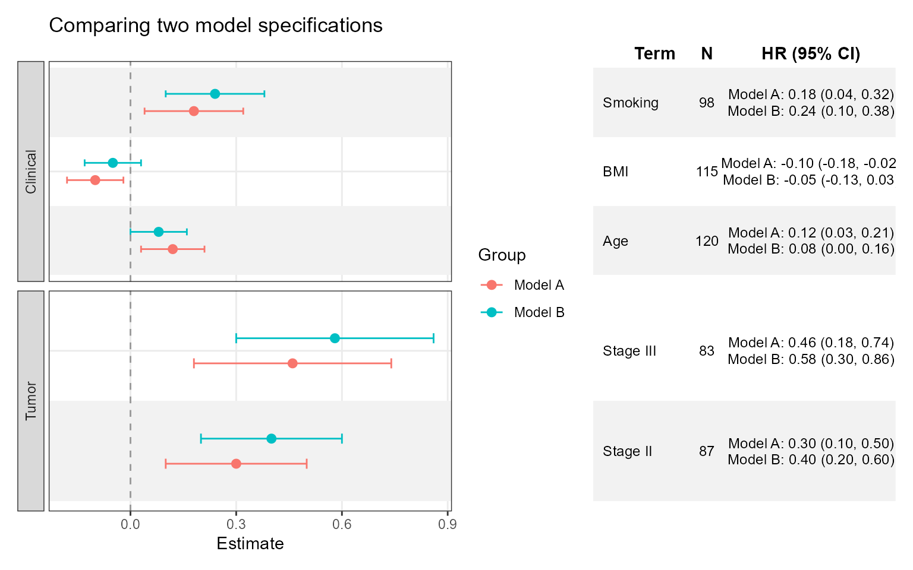
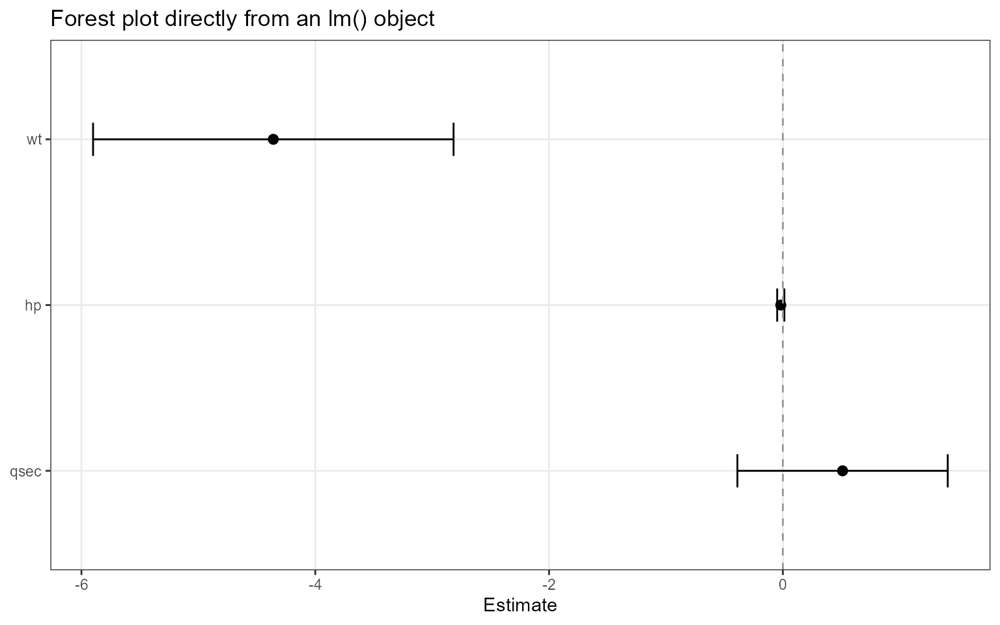
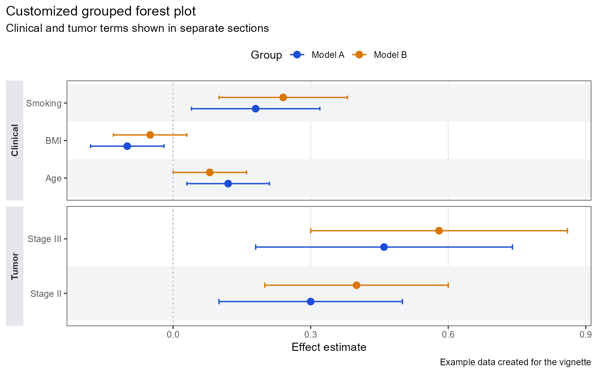

Getting Started with ggforestplotR
Source:vignettes/ggforestplotR-intro.Rmd
ggforestplotR-intro.RmdggforestplotR is built to make forest plots feel like
part of a normal ggplot2 workflow. You can start from a
simple coefficient table, scale up to grouped displays, attach a
publication-friendly side table, and then keep customizing the output
with familiar ggplot2 layers and themes.
This vignette walks through six increasingly capable patterns:
- Build a basic forest plot from a coefficient table
- Split rows into grouped sections
- Add separator lines for a multi-level variable
- Attach a side summary table after styling the plot
- Compare multiple estimates for the same terms
- Add custom styling on top of the returned
ggplotobject
A basic forest plot
The simplest workflow is to start with a data frame that already contains a term name, an estimate, and confidence limits.
basic_coefs <- data.frame(
term = c("Age", "BMI", "Treatment"),
estimate = c(0.10, -0.08, 0.34),
conf.low = c(0.02, -0.16, 0.12),
conf.high = c(0.18, 0.00, 0.56)
)
ggforestplot(
basic_coefs,
title = "Basic forest plot"
)
If your column names are different, map them explicitly with the
term, estimate, conf.low, and
conf.high arguments.
renamed_coefs <- data.frame(
variable = c("Age", "BMI", "Treatment"),
beta = c(0.10, -0.08, 0.34),
lower = c(0.02, -0.16, 0.12),
upper = c(0.18, 0.00, 0.56)
)
ggforestplot(
renamed_coefs,
term = "variable",
estimate = "beta",
conf.low = "lower",
conf.high = "upper",
title = "Basic forest plot with remapped columns"
)
Group rows into sections
Many forest plots read better when related variables are visually
grouped together. The grouping argument splits the plot
into labeled sections.
sectioned_coefs <- data.frame(
term = c("Age", "BMI", "Smoking", "Stage II", "Stage III", "Nodes"),
estimate = c(0.10, -0.08, 0.20, 0.34, 0.52, 0.28),
conf.low = c(0.02, -0.16, 0.05, 0.12, 0.20, 0.06),
conf.high = c(0.18, 0.00, 0.35, 0.56, 0.84, 0.50),
section = c(
"Clinical", "Clinical", "Clinical",
"Tumor", "Tumor", "Tumor"
)
)
ggforestplot(
sectioned_coefs,
grouping = "section",
title = "Forest plot with grouped sections"
)
This is also a good place to turn on alternating row striping.
ggforestplot(
sectioned_coefs,
grouping = "section",
striped_rows = TRUE,
stripe_fill = "grey94",
title = "Grouped sections with striped rows"
)
Add separator lines for a multi-level variable
If a variable expands into several rows, you can identify that block
with separator_group and turn on
separator_lines to draw dashed rules around the variable
block.
race_coefs <- data.frame(
term = c("race_black", "race_white", "race_other", "age", "bmi"),
label = c("Black", "White", "Other", "Age", "BMI"),
estimate = c(0.24, 0.08, -0.04, 0.12, -0.09),
conf.low = c(0.10, -0.04, -0.18, 0.03, -0.17),
conf.high = c(0.38, 0.20, 0.10, 0.21, -0.01),
variable_block = c("Race", "Race", "Race", "Age", "BMI")
)
ggforestplot(
race_coefs,
label = "label",
separator_group = "variable_block",
separator_lines = TRUE,
title = "Separator lines around a three-level Race variable"
)
Attach a side table
Many reporting workflows need both the visual forest plot and a
compact text summary beside it. The recommended workflow is to build the
forest plot first, apply any ggplot2 styling you need, and
then call add_forest_table() to compose the table on the
left or right side.
tabled_coefs <- data.frame(
term = c("Age", "BMI", "Smoking", "Stage II", "Stage III"),
estimate = c(0.12, -0.10, 0.18, 0.30, 0.46),
conf.low = c(0.03, -0.18, 0.04, 0.10, 0.18),
conf.high = c(0.21, -0.02, 0.32, 0.50, 0.74),
sample_size = c(120, 115, 98, 87, 83),
section = c("Clinical", "Clinical", "Clinical", "Tumor", "Tumor")
)
ggforestplot(
tabled_coefs,
grouping = "section",
n = "sample_size",
striped_rows = TRUE,
title = "Forest plot with a left-side summary table"
) +
add_forest_table(
position = "left",
show_n = TRUE,
estimate_label = "Beta"
)
You can also move the table to the right side and relabel the estimate header.
ggforestplot(
tabled_coefs,
grouping = "section",
n = "sample_size",
title = "Forest plot with a right-side summary table"
) +
ggplot2::theme(
panel.grid.major.y = ggplot2::element_blank(),
plot.title.position = "plot"
) +
add_forest_table(
position = "right",
show_n = TRUE,
estimate_label = "HR"
)
Because add_forest_table() is called after the plot is
built, styling stays local to the forest plot until the final
composition step.
Compare multiple estimates per term
The group argument is for a different kind of grouping:
multiple estimates for the same term. This is useful when comparing
models, cohorts, or timepoints.
comparison_coefs <- data.frame(
term = rep(c("Age", "BMI", "Smoking", "Stage II", "Stage III"), 2),
estimate = c(
0.12, -0.10, 0.18, 0.30, 0.46,
0.08, -0.05, 0.24, 0.40, 0.58
),
conf.low = c(
0.03, -0.18, 0.04, 0.10, 0.18,
0.00, -0.13, 0.10, 0.20, 0.30
),
conf.high = c(
0.21, -0.02, 0.32, 0.50, 0.74,
0.16, 0.03, 0.38, 0.60, 0.86
),
model = rep(c("Model A", "Model B"), each = 5),
section = rep(c("Clinical", "Clinical", "Clinical", "Tumor", "Tumor"), 2),
sample_size = rep(c(120, 115, 98, 87, 83), 2)
)
ggforestplot(
comparison_coefs,
group = "model",
grouping = "section",
n = "sample_size",
striped_rows = TRUE,
dodge_width = 0.5,
title = "Comparing two model specifications"
) +
add_forest_table(
position = "right",
show_n = TRUE,
estimate_label = "HR"
)
When you pass a group column,
ggforestplot() colors each series and dodges the points so
the estimates remain readable. In the attached table, grouped rows are
collapsed into a single text cell per term.
Start from a fitted model
If you have a model object and broom is installed,
ggforestplot() can call broom::tidy() for you.
This makes it easy to move from a fitted model to a coefficient plot
without building the table yourself first.
fit <- lm(mpg ~ wt + hp + qsec, data = mtcars)
ggforestplot(
fit,
sort_terms = "descending",
title = "Forest plot directly from an lm() object"
)
If you want to inspect or reuse the intermediate data, call
tidy_forest_model() directly.
tidy_forest_model(fit)Custom styling with ggplot2
The return value from ggforestplot() is a regular
ggplot object when no side table is attached, so you can
continue styling it with scales, labels, and themes.
ggforestplot(
comparison_coefs,
group = "model",
grouping = "section",
striped_rows = TRUE,
stripe_fill = "#F3F4F6",
zero_line_colour = "#9CA3AF",
zero_line_linetype = 3,
point_size = 2.8,
line_size = 0.6,
title = "Customized grouped forest plot",
xlab = "Effect estimate",
ylab = NULL
) +
ggplot2::scale_colour_manual(
values = c("Model A" = "#1D4ED8", "Model B" = "#D97706")
) +
ggplot2::labs(
subtitle = "Clinical and tumor terms shown in separate sections",
caption = "Example data created for the vignette"
) +
ggplot2::theme(
legend.position = "top",
panel.grid.major.y = ggplot2::element_blank(),
strip.background = ggplot2::element_rect(fill = "#E5E7EB", colour = NA),
strip.text.y.left = ggplot2::element_text(face = "bold"),
plot.title.position = "plot"
)
That last example is the main design idea behind
ggforestplotR: the package should handle the repetitive
forest-plot mechanics, while still letting you finish the visual design
with the rest of the ggplot2 ecosystem.